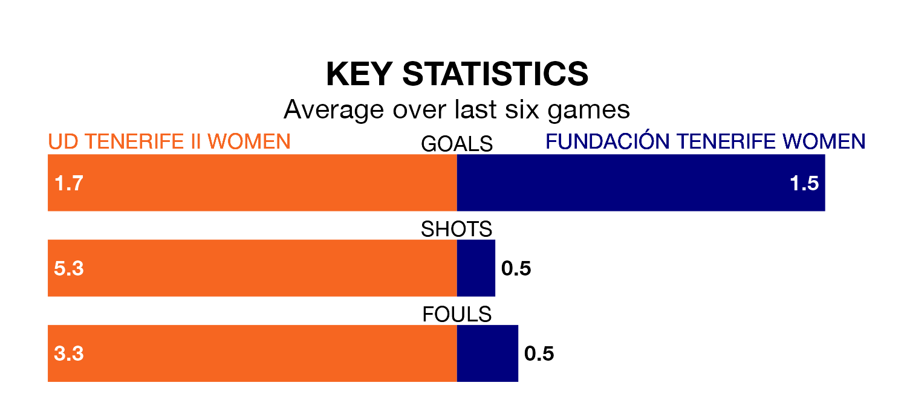

Two of the Segunda Federación Femenina's meanest defences go head-to-head on Sunday, when UD Tenerife II Women host Fundación Tenerife Women.
No teams have conceded fewer goals than Tenerife II Women to date: the home side have let in just 10 goals in 25 games.
Fundación Tenerife have conceded 20 goals in 25 games, giving them the fourth tightest back line so far this season.
Tenerife II Women are third in the table after 25 games, of which they have won 15 and drawn nine, earning 54 points.
Fundación Tenerife are four places behind the hosts in seventh, with 14 wins and five draws putting them on 47 points.
Tenerife II Women are in good form in the Segunda Federación Femenina, with four wins and two draws from their last six games.
With two wins and three draws over that period, the away team's form is worse – they have taken nine points from 18, compared to Tenerife II Women's 14.
Tenerife II Women's last match was on March 23, a 0-0 draw against Elche Women.
Fundación Tenerife lost 1-0 against CFF Albacete last time out, on March 28.
Updated: 10:31 (UTC), 31/03/24